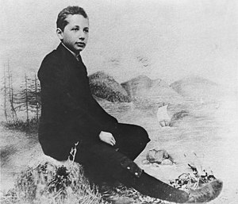
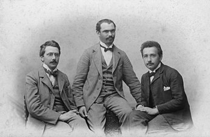

|  |
Albert Einstein was born in Ulm,in the Kingdom of Württemberg in the German Empire, on 14 March 1879 into a family of secular Ashkenazi Jews. His parents were Hermann Einstein, a salesman and engineer, and Pauline Koch. In 1880, the family moved to Munich, where Einstein's father and his uncle Jakob founded Elektrotechnische Fabrik J. Einstein & Cie, a company that manufactured electrical equipment based on direct current. Albert attended a Catholic elementary school in Munich, from the age of five, for three years. At the age of eight, he was transferred to the Luitpold-Gymnasium (now known as the Albert-Einstein-Gymnasium), where he received advanced primary and secondary school education until he left the German Empire seven years later In 1894, Hermann and Jakob's company lost a bid to supply the city of Munich with electrical lighting because they lacked the capital to convert their equipment from the direct current (DC) standard to the more efficient alternating current (AC) standard. The loss forced the sale of the Munich factory. In search of business, the Einstein family moved to Italy, first to Milan and a few months later to Pavia. In Pavia, the Einsteins settled in Palazzo Cornazzani, a medieval building where, at different times, Ugo Foscolo, Contardo Ferrini and Ada Negri lived. When the family moved to Pavia, Einstein, then 15, stayed in Munich to finish his studies at the Luitpold Gymnasium. His father intended for him to pursue electrical engineering, but Einstein clashed with the authorities and resented the school's regimen and teaching method. He later wrote that the spirit of learning and creative thought was lost in strict rote learning. At the end of December 1894, he traveled to Italy to join his family in Pavia, convincing the school to let him go by using a doctor's note. During his time in Italy, he wrote a short essay with the title "On the Investigation of the State of the Ether in a Magnetic Field". |
By 1908, he was recognized as a leading scientist and was appointed lecturer at the University of Bern. The following year, after he gave a lecture on electrodynamics and the relativity principle at the University of Zurich, Alfred Kleiner recommended him to the faculty for a newly created professorship in theoretical physics. Einstein was appointed associate professor in 1909. Einstein became a full professor at the German Charles-Ferdinand University in Prague in April 1911, accepting Austrian citizenship in the Austro-Hungarian Empire to do so.During his Prague stay, he wrote 11 scientific works, five of them on radiation mathematics and on the quantum theory of solids. |
 |
On 17 April 1955, Einstein experienced internal bleeding caused by the rupture of an abdominal aortic aneurysm, which had previously been reinforced surgically by Rudolph Nissen in 1948. He took the draft of a speech he was preparing for a television appearance commemorating the state of Israel's seventh anniversary with him to the hospital, but he did not live to complete it. Einstein refused surgery, saying, "I want to go when I want. It is tasteless to prolong life artificially. I have done my share; it is time to go. I will do it elegantly."He died in the University Medical Center of Princeton at Plainsboro early the next morning at the age of 76, having continued to work until near the end. During the autopsy, the pathologist Thomas Stoltz Harvey removed Einstein's brain for preservation without the permission of his family, in the hope that the neuroscience of the future would be able to discover what made Einstein so intelligent.Einstein's remains were cremated in Trenton, New Jersey, and his ashes were scattered at an undisclosed location. In a memorial lecture delivered on 13 December 1965 at UNESCO headquarters, nuclear physicist J. Robert Oppenheimer summarized his impression of Einstein as a person: "He was almost wholly without sophistication and wholly without worldliness ... There was always with him a wonderful purity at once childlike and profoundly stubborn." Einstein bequeathed his personal archives, library, and intellectual assets to the Hebrew University of Jerusalem in Israel.